library(tidyverse)
library(cmdstanr)
library(loo)
source("../../functions/import_data.R")
source("../../functions/prep_data.R")
source("../../functions/compute_summary_stats.R")
source("../../functions/plot_model.R")
source("../../functions/plot_data.R")
source("../../functions/post_functions.R")
source("../../functions/sim_foraging_data.R")
options(mc.cores = 4)
# set global ggplot theme
theme_set(ggthemes::theme_tufte())Testing multi-level models
Fitting Model to Simulated Data
- Model 1.0: the original model first detailed in Clarke et al (2022), reimplemented in new code. The only other edit is to correctly calculate absolute proximity (we previously scaled before calculating inter-item distances, which led to expansion of vertical distances compared to the horizontal in cases where foraging stimuli were arranged on a rectangular grid - this minor edit makes little difference to the overall fit of the model).
- Model 1.1: the same as model 1.1., except it uses relative proximity - for each item selection, we divide all inter-target distances by the distance to the closest item. The idea behind this is that it may allow the model’s proximity weighting to cope better towards the end of a trial when the items are sparser.
- Model 1.2: the same as 1.1 except it has no parameter for relative direction.
Model 1.0
d <- readRDS("scratch/d_1_0.rds")
fit <- readRDS("scratch/multi_level_1_0_tmp.rds")
item_class_weights = list(c(0.7, 0.3, 0, 0))
b_stick = 1
rho_delta = 15
rho_psi = -1
# compute run statistics for later
runs_emp <- get_run_info_over_trials(d$found)
iisv_emp <- get_iisv_over_trials(d$found) Posterior Density Plots
We can plot both fixed and random effects from the model.
post <- extract_post(fit, d, multi_level = TRUE)Fixed Effects
plot_model_fixed(post, gt = list(b_a = qlogis(item_class_weights[[1]][1]),
b_stick = b_stick,
rho_delta = rho_delta,
rho_psi = rho_psi))Random Effects
plot_model_random(post)
Model Accuracy
pred <- summarise_postpred(fit, d, draw_sample_frac = 0.1)
plot_model_accuracy(pred)`summarise()` has grouped output by 'found'. You can override using the
`.groups` argument.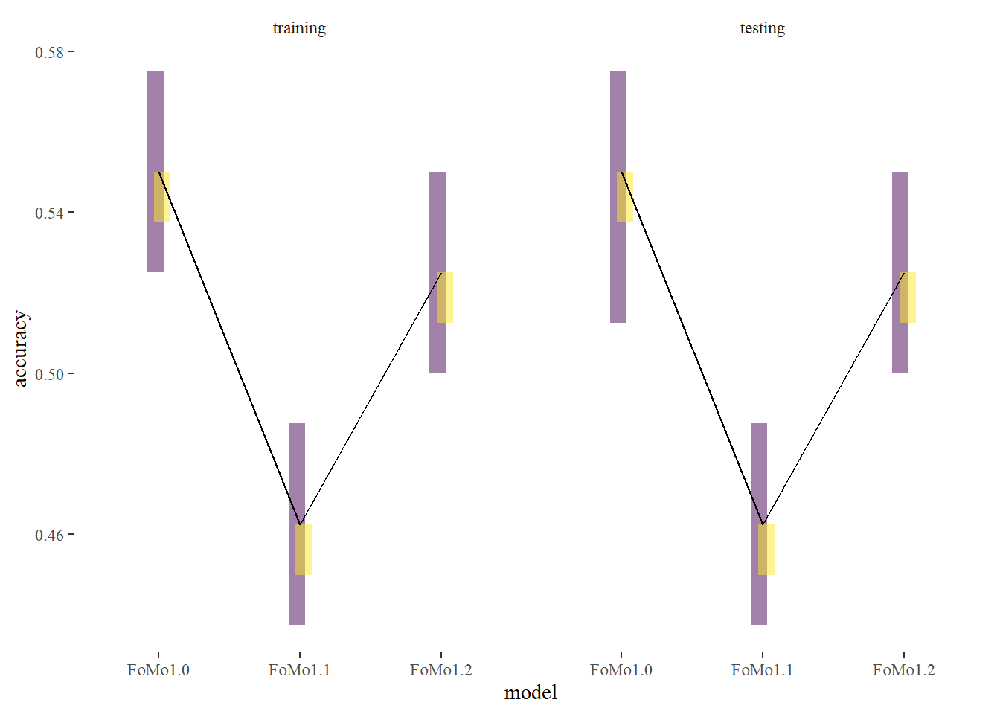
Compare Run Statistics
# small wrapper function for plotting run statistic comparison
simple_run_stat_comparison <- function(runs_emp, pred) {
runs_sim <- get_run_info_over_trials(pred$sim)
bind_rows(runs_emp %>% mutate(class = "empirical"),
runs_sim %>% mutate(class = "simulated") %>% select(-.draw)) %>%
pivot_longer(c("max_run_length", "n_runs")) %>%
ggplot(aes(class, value)) +
geom_boxplot() +
facet_wrap(~name, scales = "free")
}
simple_run_stat_comparison(runs_emp, pred) ■■■ 8% | ETA: 34s ■■■■■■ 16% | ETA: 31s ■■■■■■■■ 24% | ETA: 29s ■■■■■■■■■■ 32% | ETA: 26s ■■■■■■■■■■■■■ 39% | ETA: 23s ■■■■■■■■■■■■■■■ 46% | ETA: 21s ■■■■■■■■■■■■■■■■■ 53% | ETA: 18s ■■■■■■■■■■■■■■■■■■■ 60% | ETA: 16s ■■■■■■■■■■■■■■■■■■■■■ 67% | ETA: 13s ■■■■■■■■■■■■■■■■■■■■■■■ 73% | ETA: 11s ■■■■■■■■■■■■■■■■■■■■■■■■■ 80% | ETA: 8s ■■■■■■■■■■■■■■■■■■■■■■■■■■■ 88% | ETA: 5s ■■■■■■■■■■■■■■■■■■■■■■■■■■■■■ 95% | ETA: 2s
Compare IISVs
What about the inter-item selection vectors?
plot_model_human_iisv_comparison(pred, d) ■■■■■■■■■■■■■ 42% | ETA: 5s ■■■■■■■■■■■■■■■■■■■■■■■■■■■ 86% | ETA: 1s
Model 1.1
d2 <- readRDS("scratch/d_1_1.RDS")
fit <- readRDS("scratch/multi_level_1_1_tmp.rds")
rho_delta = 1
# compute run statistics for later
runs_emp <- get_run_info_over_trials(d2$found)
iisv_emp <- get_iisv_over_trials(d2$found) Posterior Density Plots
post <- extract_post(fit, d2, multi_level = TRUE)Fixed Effects
plot_model_fixed(post, gt = list(b_a = qlogis(item_class_weights[[1]][1]),
b_stick = b_stick,
rho_delta = rho_delta,
rho_psi = rho_psi))
Random Effects
plot_model_random(post)
Model Accuracy
pred <- summarise_postpred(fit, d2)
plot_model_accuracy(pred)`summarise()` has grouped output by 'found'. You can override using the
`.groups` argument.
Compare Run Statistics
simple_run_stat_comparison(runs_emp, pred)
Compare IISVs
What about the inter-item selection vectors?
plot_model_human_iisv_comparison(pred, d2)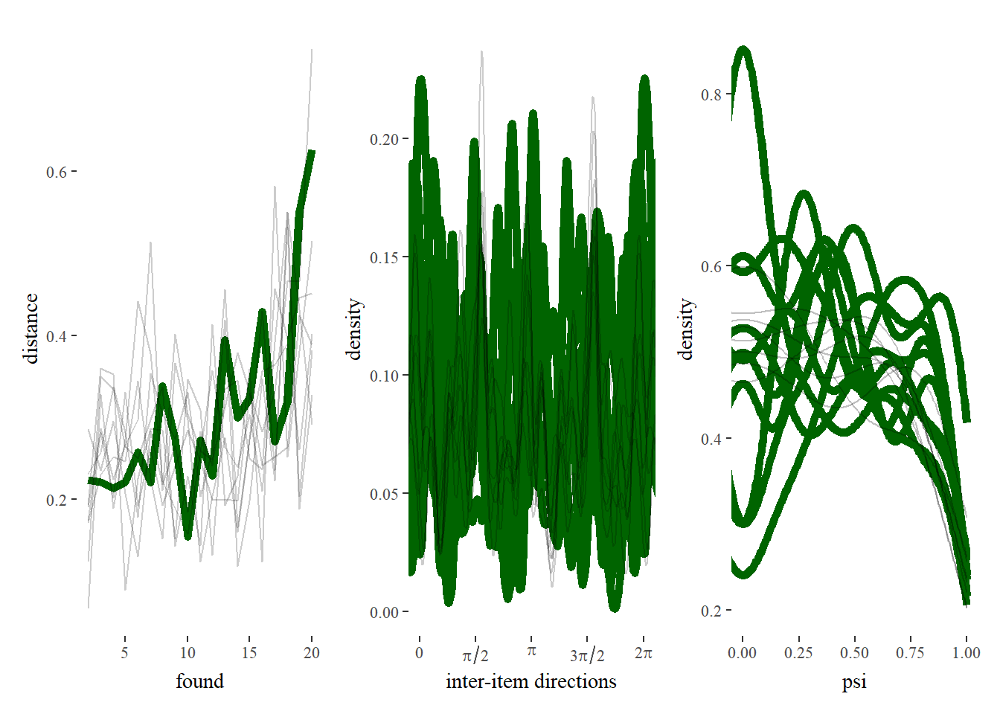
Model 1.2
d2 <- readRDS("scratch/d_1_1.RDS")
fit <- readRDS("scratch/multi_level_1_2_tmp.rds")
rho_delta = 1Posterior Density Plots
post <- extract_post(fit, d2, multi_level = TRUE)Fixed Effects
plot_model_fixed(post, gt = list(b_a = qlogis(item_class_weights[[1]][1]),
b_stick = b_stick,
rho_delta = rho_delta,
rho_psi = rho_psi))Model Accuracy
pred <- summarise_postpred(fit, d2, draw_sample_frac = 0.1)
plot_model_accuracy(pred)`summarise()` has grouped output by 'found'. You can override using the
`.groups` argument.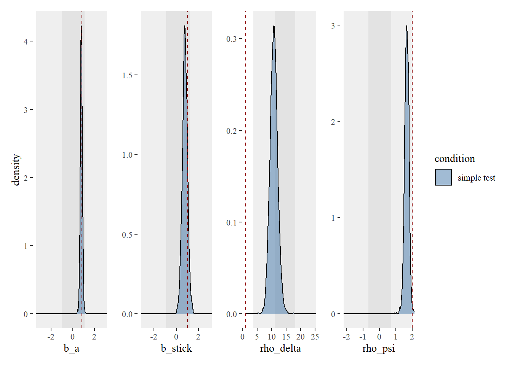
Compare Run Statistics
simple_run_stat_comparison(runs_emp, pred) ■■■■■■ 16% | ETA: 10s ■■■■■■■■■■■■■ 40% | ETA: 8s ■■■■■■■■■■■■■■■■■■■■■ 67% | ETA: 4s ■■■■■■■■■■■■■■■■■■■■■■■■■■■■■■ 96% | ETA: 0s
Compare IISVs
What about the inter-item selection vectors?
plot_model_human_iisv_comparison(pred, d2) ■■■■■■■■■■■■■■■■■■■ 61% | ETA: 1sModel comparison
elpd_1_0 <- readRDS('scratch/elpd_1_0.rds')
elpd_1_1 <- readRDS('scratch/elpd_1_1.rds')
elpd_1_2 <- readRDS('scratch/elpd_1_2.rds')
loo_compare(elpd_1_0, elpd_1_1, elpd_1_2) elpd_diff se_diff
model2 0.0 0.0
model3 -10.1 3.1
model1 -48.2 9.4 2 conditions
Model 1.0
d <- readRDS("scratch/d_2cond.rds")
fit <- readRDS("scratch/multi_level_2cond_1_0_tmp.rds")
item_class_weights = list(c(0.5, 0.5, 0, 0),
c(0.7, 0.3, 0, 0))
b_stick = c(0, 2)
rho_delta = c(20, 15)
rho_psi = c(-1, -1)
# compute run statistics for later
runs_emp <- get_run_info_over_trials(d$found)
iisv_emp <- get_iisv_over_trials(d$found) We can plot both fixed and random effects from the model.
post <- extract_post(fit, d, multi_level = TRUE)Fixed Effects
plot_model_fixed(post, gt = list(b_a = c(qlogis(item_class_weights[[1]][1]),qlogis(item_class_weights[[2]][1])),
b_stick = b_stick,
rho_delta = rho_delta,
rho_psi = rho_psi))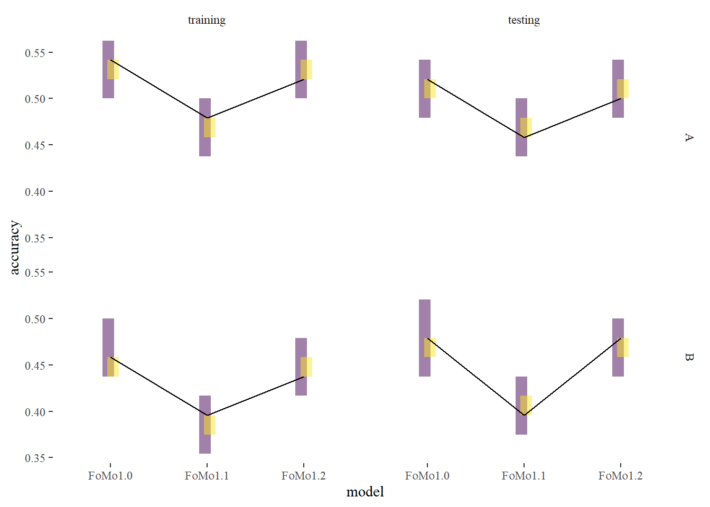
Random Effects
plot_model_random(post)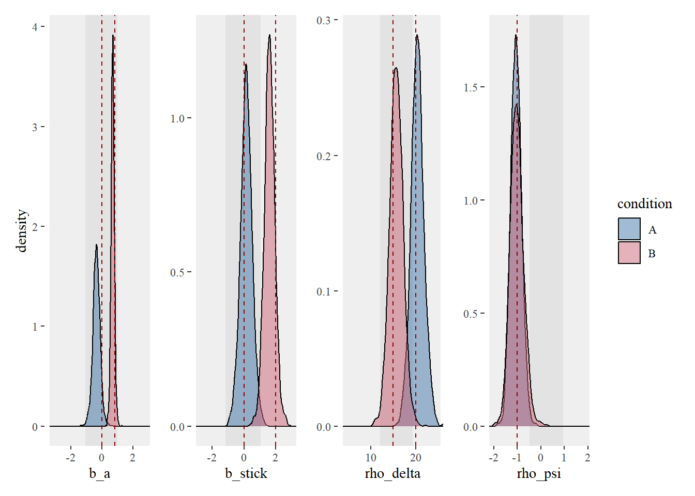
Model Accuracy
pred <- summarise_postpred(fit, d)
plot_model_accuracy(pred)`summarise()` has grouped output by 'found'. You can override using the
`.groups` argument.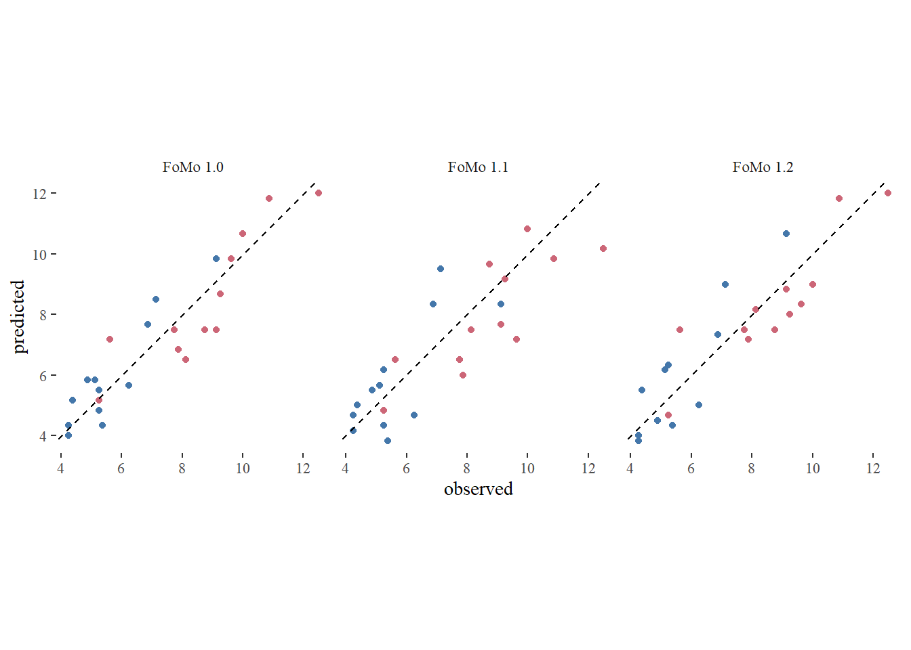
Compare Run Statistics
simple_run_stat_comparison <- function(runs_emp, pred) {
runs_sim <- get_run_info_over_trials(pred$sim)
bind_rows(runs_emp %>% mutate(class = "empirical"),
runs_sim %>% mutate(class = "simulated") %>% select(-.draw)) %>%
pivot_longer(c("max_run_length", "n_runs")) %>%
ggplot(aes(class, value, fill = condition)) +
geom_boxplot() +
facet_wrap(~name, scales = "free")
}
simple_run_stat_comparison(runs_emp, pred)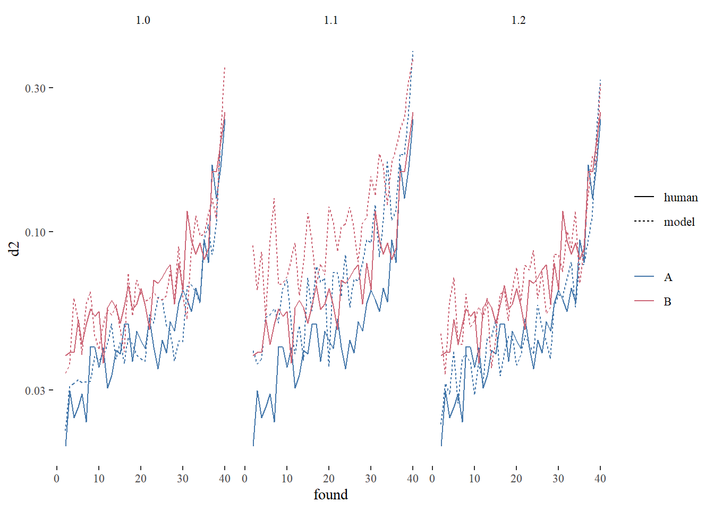
Compare IISVs
What about the inter-item selection vectors?
plot_model_human_iisv_comparison(pred, d)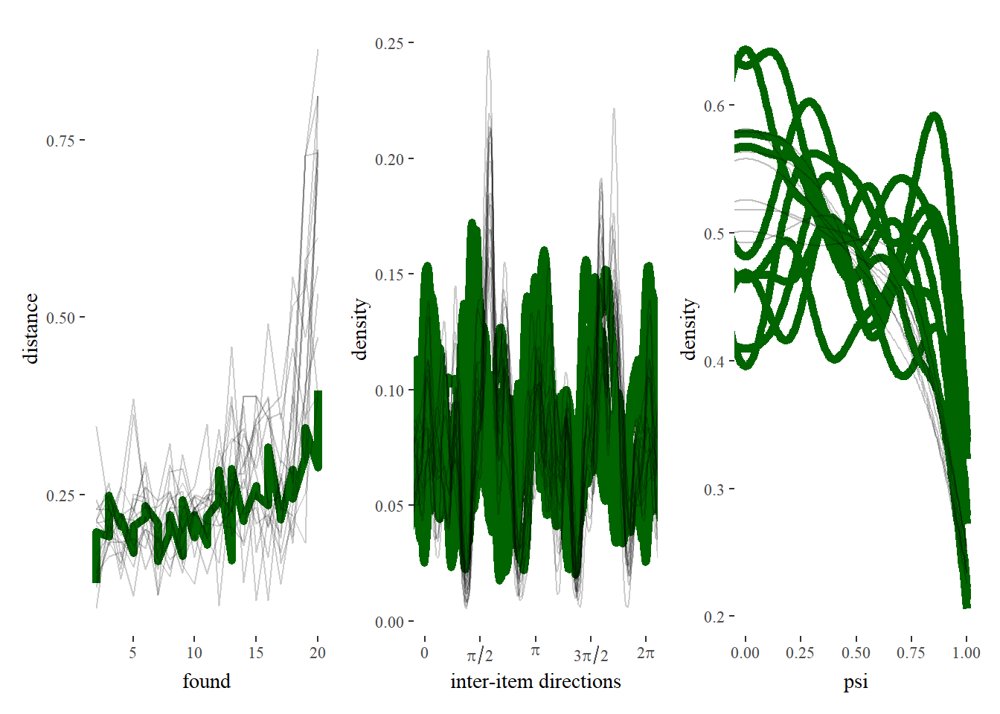
Model 1.1
d <- readRDS("scratch/d_2cond_relprox.rds")
fit <- readRDS("scratch/multi_level_2cond_1_1_tmp.rds")
rho_delta = c(1,2)
# compute run statistics for later
runs_emp <- get_run_info_over_trials(d$found)
iisv_emp <- get_iisv_over_trials(d$found) We can plot both fixed and random effects from the model.
post <- extract_post(fit, d, multi_level = TRUE)Fixed Effects
plot_model_fixed(post, gt = list(b_a = c(qlogis(item_class_weights[[1]][1]),qlogis(item_class_weights[[2]][1])),
b_stick = b_stick,
rho_delta = rho_delta,
rho_psi = rho_psi))Random Effects
plot_model_random(post)Model accuracy
pred <- summarise_postpred(fit, d, draw_sample_frac = 0.1)
plot_model_accuracy(pred)`summarise()` has grouped output by 'found'. You can override using the
`.groups` argument.Compare Run Statistics
simple_run_stat_comparison(runs_emp, pred) ■ 2% | ETA: 3m ■■ 3% | ETA: 3m ■■■ 5% | ETA: 3m ■■■ 7% | ETA: 3m ■■■■ 9% | ETA: 2m ■■■■ 11% | ETA: 2m ■■■■■ 13% | ETA: 2m ■■■■■ 15% | ETA: 2m ■■■■■■ 17% | ETA: 2m ■■■■■■■ 19% | ETA: 2m ■■■■■■■ 20% | ETA: 2m ■■■■■■■■ 22% | ETA: 2m ■■■■■■■■ 24% | ETA: 2m ■■■■■■■■■ 26% | ETA: 2m ■■■■■■■■■ 28% | ETA: 2m ■■■■■■■■■■ 30% | ETA: 2m ■■■■■■■■■■■ 32% | ETA: 2m ■■■■■■■■■■■ 34% | ETA: 2m ■■■■■■■■■■■■ 36% | ETA: 2m ■■■■■■■■■■■■ 38% | ETA: 2m ■■■■■■■■■■■■■ 40% | ETA: 2m ■■■■■■■■■■■■■ 42% | ETA: 2m ■■■■■■■■■■■■■■ 44% | ETA: 1m ■■■■■■■■■■■■■■■ 46% | ETA: 1m ■■■■■■■■■■■■■■■ 48% | ETA: 1m ■■■■■■■■■■■■■■■■ 49% | ETA: 1m ■■■■■■■■■■■■■■■■ 51% | ETA: 1m ■■■■■■■■■■■■■■■■■ 53% | ETA: 1m ■■■■■■■■■■■■■■■■■■ 55% | ETA: 1m ■■■■■■■■■■■■■■■■■■ 57% | ETA: 1m ■■■■■■■■■■■■■■■■■■■ 59% | ETA: 1m ■■■■■■■■■■■■■■■■■■■ 61% | ETA: 1m ■■■■■■■■■■■■■■■■■■■■ 63% | ETA: 1m ■■■■■■■■■■■■■■■■■■■■ 65% | ETA: 1m ■■■■■■■■■■■■■■■■■■■■■ 66% | ETA: 1m ■■■■■■■■■■■■■■■■■■■■■ 68% | ETA: 1m ■■■■■■■■■■■■■■■■■■■■■■ 70% | ETA: 48s ■■■■■■■■■■■■■■■■■■■■■■■ 72% | ETA: 44s ■■■■■■■■■■■■■■■■■■■■■■■ 74% | ETA: 41s ■■■■■■■■■■■■■■■■■■■■■■■■ 76% | ETA: 37s ■■■■■■■■■■■■■■■■■■■■■■■■■ 78% | ETA: 34s ■■■■■■■■■■■■■■■■■■■■■■■■■ 80% | ETA: 31s ■■■■■■■■■■■■■■■■■■■■■■■■■■ 82% | ETA: 28s ■■■■■■■■■■■■■■■■■■■■■■■■■■ 84% | ETA: 24s ■■■■■■■■■■■■■■■■■■■■■■■■■■■ 86% | ETA: 21s ■■■■■■■■■■■■■■■■■■■■■■■■■■■■ 88% | ETA: 18s ■■■■■■■■■■■■■■■■■■■■■■■■■■■■ 90% | ETA: 15s ■■■■■■■■■■■■■■■■■■■■■■■■■■■■■ 92% | ETA: 12s ■■■■■■■■■■■■■■■■■■■■■■■■■■■■■ 94% | ETA: 9s ■■■■■■■■■■■■■■■■■■■■■■■■■■■■■■ 96% | ETA: 6s ■■■■■■■■■■■■■■■■■■■■■■■■■■■■■■ 98% | ETA: 3s
Compare IISVs
What about the inter-item selection vectors?
plot_model_human_iisv_comparison(pred, d) ■■■■■■■ 21% | ETA: 10s ■■■■■■■■■■■■■■■ 46% | ETA: 7s ■■■■■■■■■■■■■■■■■■■■■■ 69% | ETA: 4s ■■■■■■■■■■■■■■■■■■■■■■■■■■■■■ 94% | ETA: 1s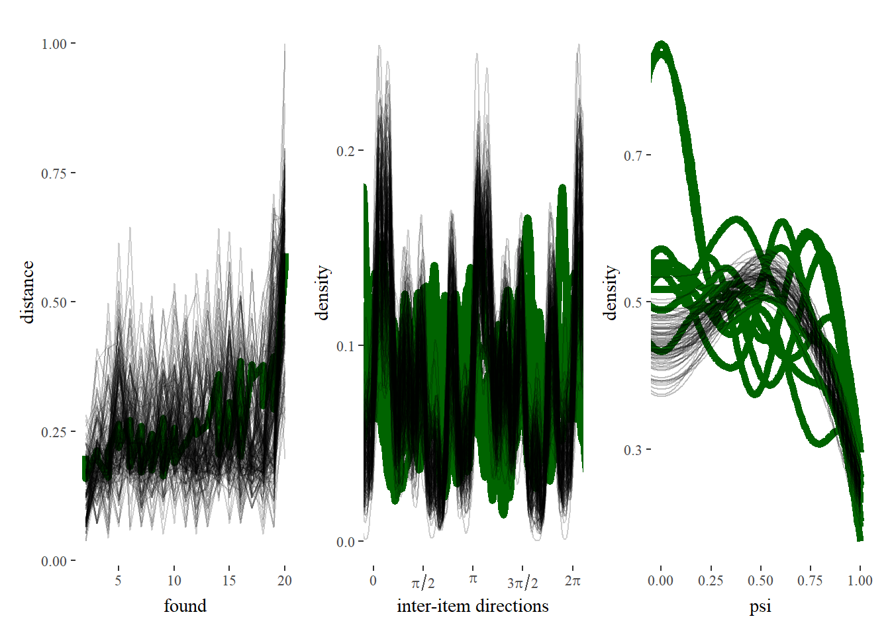
Model 1.2
d <- readRDS("scratch/d_2cond_relprox.rds")
fit <- readRDS("scratch/multi_level_2cond_1_2_tmp.rds")
rho_delta = c(1,2)
# compute run statistics for later
runs_emp <- get_run_info_over_trials(d$found)
iisv_emp <- get_iisv_over_trials(d$found) We can plot both fixed and random effects from the model.
post <- extract_post(fit, d, multi_level = TRUE)Fixed Effects
plot_model_fixed(post, gt = list(b_a = c(qlogis(item_class_weights[[1]][1]),qlogis(item_class_weights[[2]][1])),
b_stick = b_stick,
rho_delta = rho_delta,
rho_psi = rho_psi))Random Effects
plot_model_random(post)Warning: Removed 20 rows containing missing values or values outside the scale range
(`geom_segment()`).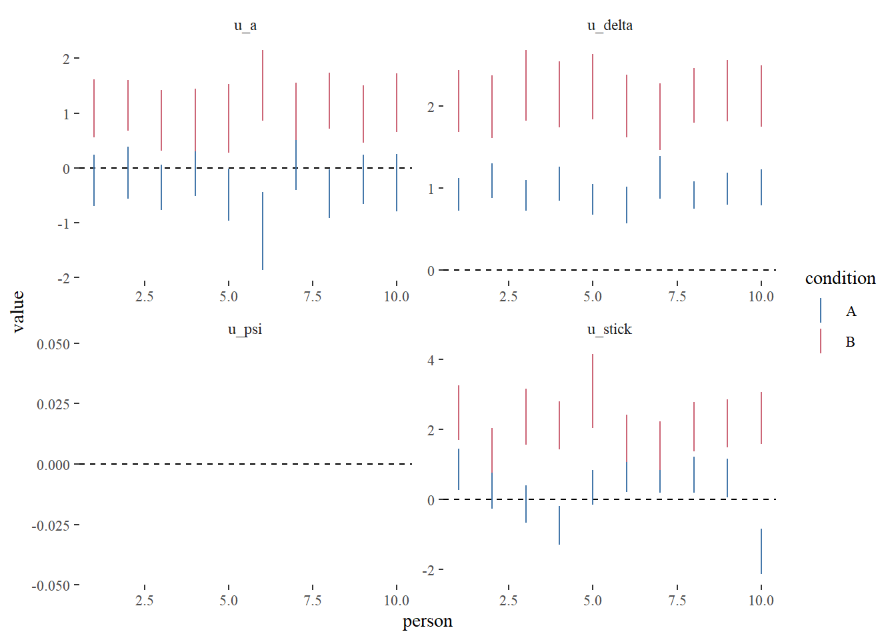
Model accuracy
pred <- summarise_postpred(fit, d, draw_sample_frac = 0.1)
plot_model_accuracy(pred)`summarise()` has grouped output by 'found'. You can override using the
`.groups` argument.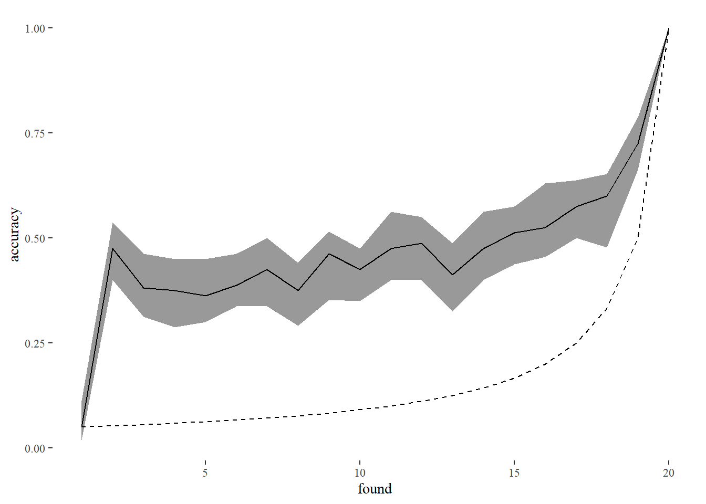
Compare Run Statistics
simple_run_stat_comparison(runs_emp, pred) ■ 1% | ETA: 2m ■■ 3% | ETA: 2m ■■■ 5% | ETA: 2m ■■■ 7% | ETA: 2m ■■■■ 9% | ETA: 2m ■■■■ 11% | ETA: 2m ■■■■■ 13% | ETA: 2m ■■■■■■ 15% | ETA: 2m ■■■■■■ 17% | ETA: 2m ■■■■■■■ 19% | ETA: 2m ■■■■■■■ 22% | ETA: 2m ■■■■■■■■ 24% | ETA: 2m ■■■■■■■■■ 26% | ETA: 2m ■■■■■■■■■ 28% | ETA: 2m ■■■■■■■■■■ 30% | ETA: 2m ■■■■■■■■■■ 32% | ETA: 2m ■■■■■■■■■■■ 34% | ETA: 2m ■■■■■■■■■■■■ 36% | ETA: 2m ■■■■■■■■■■■■ 38% | ETA: 2m ■■■■■■■■■■■■■ 40% | ETA: 1m ■■■■■■■■■■■■■■ 42% | ETA: 1m ■■■■■■■■■■■■■■ 44% | ETA: 1m ■■■■■■■■■■■■■■■ 46% | ETA: 1m ■■■■■■■■■■■■■■■ 48% | ETA: 1m ■■■■■■■■■■■■■■■■ 50% | ETA: 1m ■■■■■■■■■■■■■■■■■ 52% | ETA: 1m ■■■■■■■■■■■■■■■■■ 54% | ETA: 1m ■■■■■■■■■■■■■■■■■■ 56% | ETA: 1m ■■■■■■■■■■■■■■■■■■■ 58% | ETA: 1m ■■■■■■■■■■■■■■■■■■■ 60% | ETA: 1m ■■■■■■■■■■■■■■■■■■■■ 63% | ETA: 1m ■■■■■■■■■■■■■■■■■■■■ 65% | ETA: 1m ■■■■■■■■■■■■■■■■■■■■■ 67% | ETA: 49s ■■■■■■■■■■■■■■■■■■■■■■ 69% | ETA: 46s ■■■■■■■■■■■■■■■■■■■■■■ 71% | ETA: 43s ■■■■■■■■■■■■■■■■■■■■■■■ 73% | ETA: 40s ■■■■■■■■■■■■■■■■■■■■■■■ 75% | ETA: 37s ■■■■■■■■■■■■■■■■■■■■■■■■ 77% | ETA: 34s ■■■■■■■■■■■■■■■■■■■■■■■■■ 79% | ETA: 31s ■■■■■■■■■■■■■■■■■■■■■■■■■ 81% | ETA: 28s ■■■■■■■■■■■■■■■■■■■■■■■■■■ 83% | ETA: 25s ■■■■■■■■■■■■■■■■■■■■■■■■■■■ 85% | ETA: 22s ■■■■■■■■■■■■■■■■■■■■■■■■■■■ 87% | ETA: 19s ■■■■■■■■■■■■■■■■■■■■■■■■■■■■ 89% | ETA: 16s ■■■■■■■■■■■■■■■■■■■■■■■■■■■■ 91% | ETA: 13s ■■■■■■■■■■■■■■■■■■■■■■■■■■■■■ 94% | ETA: 10s ■■■■■■■■■■■■■■■■■■■■■■■■■■■■■■ 96% | ETA: 7s ■■■■■■■■■■■■■■■■■■■■■■■■■■■■■■ 98% | ETA: 3s ■■■■■■■■■■■■■■■■■■■■■■■■■■■■■■■ 100% | ETA: 0s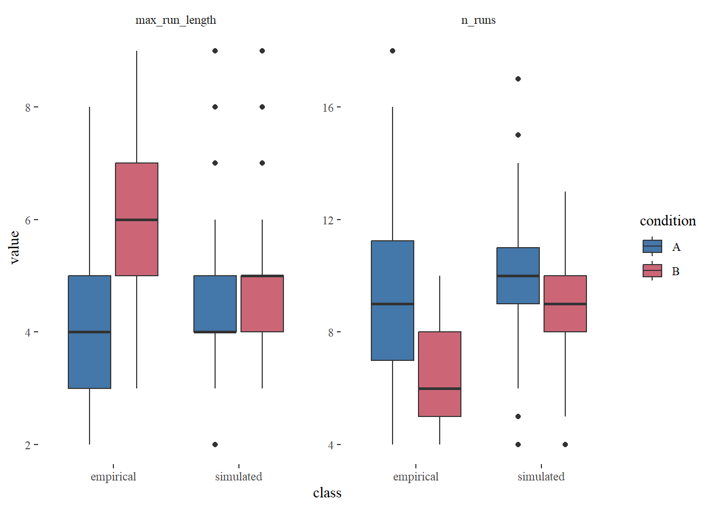
Compare IISVs
What about the inter-item selection vectors?
plot_model_human_iisv_comparison(pred, d) ■■■■■■ 16% | ETA: 10s ■■■■■■■■■■■■■ 40% | ETA: 7s ■■■■■■■■■■■■■■■■■■■■■ 65% | ETA: 4s ■■■■■■■■■■■■■■■■■■■■■■■■■■■■ 91% | ETA: 1s